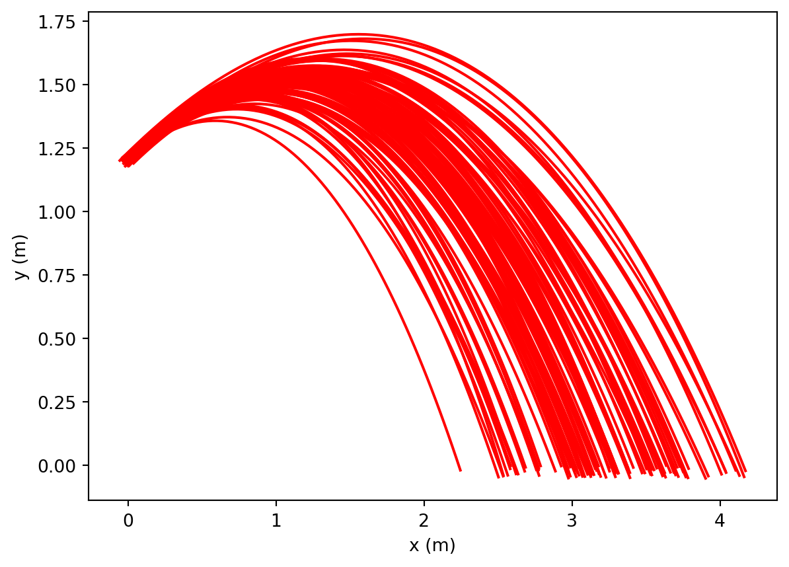

# Import libaries
from matplotlib import pyplot as plt
%matplotlib inline
# Variables with uncertainties attached
# Define mean g and its uncertainty
# Define mean drag coefficient and its uncertainty(Make a guess for now, you'll investigate a better value in activity II)
# Define mean radius of projectile and its uncertainty
# Define mean air density and its uncertainty
# Define mean mass of projectile and its uncertainty
# Define mean initial speed of projectile and its uncertainty
# Define mean intial launch angle of projectile (in radians) and its uncertainty
# Define mean initial x position of projectile and its uncertainty
# Define mean initial y position of projectile and its uncertainty
# Variables with no uncertainty attached.
# Define dt (smaller is better, but if the value is too small, the computation time will be large.)
#Outer Loop to calculate uncertainty
for i in range(Ntrials):
# Generate a random initial speed (Make a guess for now, we'll modify this later)
# Generate a random initial launch angle (radians!!!)
# Generate a random g value.
# Generate a random value for the radius of the projectile.
# Generate a random value for the density of air.
# Generate a random value for the mass of the projectile.
# Generate a random initial launch location (one for x and one for y)
# Generate a random value for the drag constant
# Calculate cross-sectional area of projectile.
# Calculate B = 1/2 rho C A
# Initial Conditions. Initialize lists for x, y,vx,vy, and t
# Euler's Loop (inner) to calculate the flight time using Euler's equations
while y[-1] > 0:
# Calculate speed (equation 4)
# Calculate ax
# Calculate ay
# Update vx
# Update vy
# update x
# updata y
# update time
# Plot y vs x
plt.show()Lab 10 Projectile Motion with Drag and Uncertainty
Name:
Skills
In this lab you will gain the following skills
- Understand air drag in two dimensions.
- Know what Euler’s method is and how to implement it.
Background Information
Air Drag in two dimensions
In this lab, you will develop a model for the two-dimensional motion of a projectile with air resistance. The model will make use of Euler’s method for the x and y components of the motion. The drag force (due to air resistance) is given by:
\[F_{D} = \frac{1}{2} \; C \rho A v^{2} \;\;\;\;\;(1) \]
where C is the drag coefficient, \(\rho\) is the air density, and A is the cross-sectional area of the ball.
The equations of motion are:
\[ x_{n+1} = x_{n} + v_{x,n} \cdot \Delta t \;\;\;\;\;(2)\]
\[ y_{n+1} = y_{n} + v_{y,n} \cdot \Delta t \;\;\;\;\;(3)\] \[ v_n = \sqrt{v_{x,n}^2 + v_{y,n}^2} \;\;\;\;\;(4)\]
\[ v_{x,n+1} = v_{x,n} + a_x \cdot \Delta t \;\;\;\;\;\;\;\;\;\;(5)\]
\[ v_{y,n+1} = v_{y,n} + a_y\cdot \Delta t \;\;\;\;\;\;\;(6)\]
with the acceleration components given by \[a_y = -\frac{B}{m}\cdot v_{n} \cdot v_{y,n} \cdot \Delta t - g\] \[a_x = -\frac{B}{m}\cdot v_{n} \cdot v_{x,n} \cdot \Delta t \] and where \[B = {1 \over 2} C\cdot \rho \cdot A\]
and just as we did last week:
\[ \rho = \rho_0 {P\over P_0}{T_0\over T}\]
Activity I Model for 2-d Motion with Air Resistance
Goal (Overview)
Use Euler’s method to model the motion of a projectile experiencing non-negligble air drag. Predict the range of the projectile with its associated uncertainty.
Procedure
Use the code template provided below and any codes that you have authored in previous labs to construct your model. Below are some hints/tips:
- We don’t know exact values for the drag coefficient (\(C\)) or the projectile’s exit speed. Make a guess for now and we’ll modify these values later.
- Previously, we have modeled one-dimensional motion which means we only had to calculate a single component of the position and velocity. To model two-dimensional motion, you’ll have to have two components of the position and velocity.
- To calculate the drag force in two dimensions, you’ll need to calculate the speed (magnitude of the velocity vector) of the projectile as it changes. Since you are tracking the components of your velocity, you can do that with the following code
numpy.sqrt(vx**2 + vy**2)ornumpy.linalg.norm([vx,vy]) - Once you have finished the code, run it and observe the family of trajectories that result. Then investigate how the following variables affect the shape of the trajectory and the spread in the trajectories:
- The drag constant (\(C\))
- The initial speed of the particle.
- The cross-sectional area of the particle.
- The air temperature.
- The air pressure.
Activity II: Determination of Drag Constant
A subteam should find a value (and uncertainty) for the drag coefficient (\(D\)). A good way to do this is to use a high-speed camera (the one on your phone will probably do) and film the ball dropping. You should drop the ball from a height that give the ball enough time to reach terminal velocity well before it hits the floor. The drag constant can then be calculated using the following equation:
\[D = {2 m g \over \rho A v_T^2}\] Use \(g = (9.8004 \pm 0.00001)\) m/s\(^2\) and \(\rho = (1.23 \pm 0.01)\) kg/m\(^3\).
The rest of the values in the equation will need to be measured. Use the instructions in Appendix I to import your video into Logger Pro.
# Put calculations hereActivity III: Determination of Exit Speed
To find the launch speed of the ball with its uncertainty, you’ll need to use a photogate placed at the cannon’s exit point similar to how we measured the speed of the pendulum a few weeks ago. Here are a few tips/steps to follow to be successful.
- A photogate shows the time that the laser was blocked,so to turn that into a speed, you’ll need to divide a distance by the time
- To get the uncertainty in time, make several measurements and find the average and standard deviation of your data.
- If the laser isn’t perfectly aligned with the center of the ball as it goes through, then the part of the ball that blocks the laser will be shorter than the diameter (i.e. less ball will travel through the laser beam). With a bit of geometry, you can show that \(d_\text{beam} =d_\text{ball}\sqrt{1 - \alpha^2}\) where \(d_\text{beam}\) is the amount of ball that went through the beam, \(d_\text{ball}\) is the actual diameter of the ball, and \(\alpha\) is how far from the center of the ball the beam is (as a ratio of the radius). Here’s an example on how to use this equation: If the diameter of the ball were \(2\) cm, and I think that I can confidently keep the laser within \(0.5\) cm of the center of the ball (50% of the radius), the smallest diameter that I would expect to pass through the beam would be: \[ d_\text{beam} =(2\text{cm}) \sqrt{1 - 0.5^2} = (1.73 ~\text{cm}) \approx 1.7~ \text{cm}\] Since I’d expect my diameter to be somewhere between that number and 2 cm, I’d quote the diameter that passes through the beam to be \(1.85 \pm 0.15\) cm.
Activity IV Firing the Cannon and Testing the Model
Use the model from Activity I with the values of initial velocity and drag coefficient from Activities II and III to predict the trajectory of the styrofoam ball. You should get a family of trajectories as shown in the figure below. The instructor will give you an initial height . Using the third setting on the projectile launcher, you will need to predict the height of the projectile when \(x = {1\over 2} R\), where R is the range of the motion. A hoop with a \(10\) cm diameter will be placed at the values of x and y that you specify.
Don’t fire your styrofoam ball until the instructor or teaching assistant is there to observe.
The points for this section will be:
25 pts: Ball goes through the hoop on the first try
20 pts: Ball goes through the hoop on the second try
15 pts: Ball goes through the hoop on the third (or more) try

Appendix I
Logger Pro Movie Capture
Tips 1. Make sure that there is a meter stick in the field of view when the ball is fired.
Logger Pro Procedure 1. Use Insert>Movie to input the video clip. 2. Click on “Enable/Disable Video Analysis” which is located in the bottom right hand corner of the video window. 3. Click on “Set Scale.” Then click and drag on the image of the meter stick. 4. “Set Origin” to a position on the ground directly below where the ball is launched. 5. Make sure that the video clip is set to the frame just before the ball starts moving. Click on “Add Point” and then click on the ball. The video will advance one frame at a time.